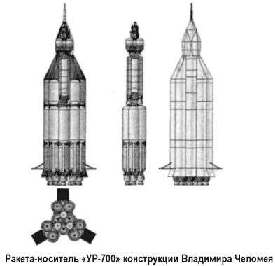
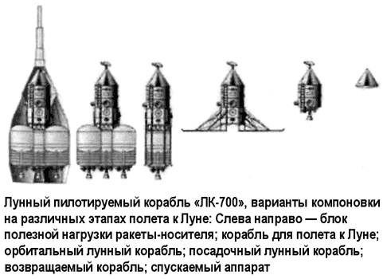
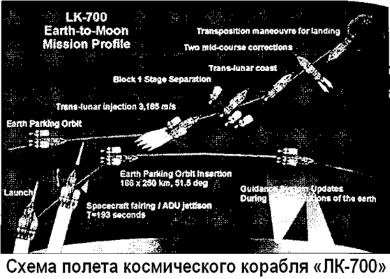
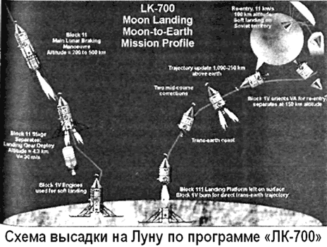

Лунная программа «УР-700-ЛК-700» Владимира Челомея
Несмотря на опалу, последовавшую за отстранением Хрущева, Владимир Челомей не оставил надежды реализовать свой вариант экспедиции на Луну. В качестве альтернативы программе «Н1-ЛЗ» он предложил проект «УР-700-ЛК-700» и с середины 60-х активно «проталкивал» его в жизнь.
Свои предложения по этому проекту Владимир Челомей представил 16 ноября 1966 года на пленарном заседании экспертной комиссии, рассматривавшей ход работ по программе «Н1-ЛЗ».



Концепция корабля «ЛК-700» была во многом неожиданна.
Стремясь предельно упростить операции, связанные с запуском и маневрами корабля в космическом пространстве, конструкторы ОКБ-52 предложили осуществить прямой полет на Луну. Однако, как показывали расчеты, для этого необходимо было создать ракету-носитель, в полтора раза превосходящую по грузоподъемности «Н-1».
За основу новой ракеты, получившей название «УР-700», принималась уже находившаяся в эксплуатации трехступенчатая «УР-500К». «УР-500» в качестве второй ступени устанавливалась на разрабатываемую первую ступень, которая состояла из девяти блоков с одним двигателем «РД-270» конструкции Глушко в каждом. Общая тяга двигателей первой ступени у Земли составляла 5760 тонн. Это позволяло вывести на орбиту ИСЗ полезный груз массой около 140 тонн (против 90 тонн — у «Н-1» и 118 тонн — у «Сатурна-5»).
Схема «прямой» экспедиции по проекту «УР-700-ЛК-700» практически не отличалась от «прямого» варианта проекта «Нова-Аполлон», от которого американцы отказались в конце 1961 года. Она предусматривала выведение на околоземную орбиту космического корабля с разгонным блоком и его последующий старт к Луне. Торможение и выход космического корабля на окололунную орбиту, а также сход с нее и гашение основной скорости выполнялись с помощью специального тормозного блока. На высоте нескольких километров от поверхности Луны тормозной блок сбрасывался, а мягкое прилунение корабля на посадочные опоры осуществлялось дросселированием ЖРД взлетного блока, как это делается в лунном корабле «ЛК» программы «Н1-ЛЗ». Двигатели всех блоков (так же как и основные двигатели ракеты-носителя «УР-700») должны были работать на высококипящих компонентах АТ-НДМГ.
Два космонавта корабля «ЛК-700» находились в возвращаемом аппарате, напоминающем аппарат, разработанный для облетной программы «УР-500К-ЛК-1».
После выполнения задач полета, связанных с пребыванием экипажа на Луне, осуществлялось отделение посадочных приспособлений и запуск ЖРД взлетного блока с работой его на полной тяге. После старта с Луны корабль «ЛК-700» должен либо сначала выйти на окололунную орбиту, а потом стартовать с нее к Земле (один вариант проекта), либо сразу же выходить на траекторию полета к Земле (второй вариант).

После проведения с помощью ЖРД взлетного блока коррекции траектории полета при подлете к Земле должно было произойти отделение спускаемого аппарата с последующим входом в атмосферу, управляемым спуском и парашютной посадкой.
Габариты «ЛК-700» были выбраны следующие: полная длина — 21,2 метра, максимальный диаметр — 2,7 метра, полная масса — 154 тонны. Расчетный срок эксплуатации — 14 дней.
Опираясь на разработки, сделанные в ОКБ-52, Челомей пытался убедить руководство отраслью в том, что при финансовой поддержке его ОКБ сможет быстро реализовать программу и обеспечить приоритет СССР в высадке на Луну.
В этом его поддерживал Валентин Глушко, обиженный на Сергея Королева и Василия Мишина. Однако экспертная комиссия сочла такое заявление слишком смелым и разрешила только проведение эскизного проектирования комплекса «УР-700-ЛК-700».
Серьезнейшим аргументом против проекта Челомея стало соображение экологической безопасности: катастрофа сверхтяжелой ракеты на высококипящих компонентах вблизи стартовой площадки приведет к тому, что весь космодром превратится в мертвую зону на 15–20 лет.
Тем не менее разработка корабля «ЛК-700» и носителя «УР-700», выполняемая в рамках обычных научно-исследовательских работ, продолжалась до начала семидесятых годов, когда программа освоения Луны была переориентирована с пилотируемых на беспилотные полеты…